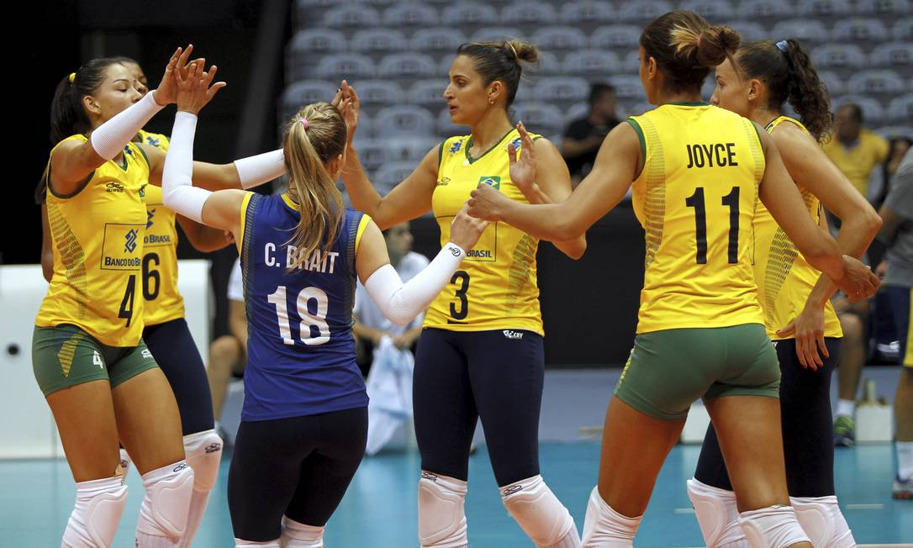

Seleção Brasileira de Vôlei Feminino Conquista Vitória Impressionante em Amistoso
A Seleção Brasileira de Vôlei Feminino conquistou uma vitória impressionante em amistoso internacional, demonstrando excelente desempenho técnico e tático. O time, sob comando de técnico renomado, apresentou um vôlei ofensivo e criativo, conquistando a confiança de torcedores e especialistas. A partida foi marcada por jogadas espetaculares, defesas impressionantes e ataques bem coordenados. As atletas brasileiras mostraram grande entrosamento e disposição para competir em alto nível. O resultado positivo reforça as esperanças de sucesso em competições internacionais futuras.
Análise Técnica da Partida
O desempenho do Brasil foi notável em todos os aspectos do jogo. A recepção foi sólida, permitindo que o time construísse ataques eficientes. O bloqueio funcionou bem, impedindo os ataques adversários e criando oportunidades para contra-ataques. O saque brasileiro foi variado e preciso, causando dificuldades ao time adversário.
As levantadoras brasileiras executaram um trabalho excepcional, distribuindo bem o jogo e criando oportunidades para as atacantes. A coordenação entre as jogadoras foi evidente, resultado de treinamentos intensivos e dedicação ao aperfeiçoamento técnico.
Destaque das Atletas
Várias atletas se destacaram durante a partida. As atacantes demonstraram grande potência e precisão nos ataques. As defensoras realizaram trabalho impecável, salvando bolas que pareciam perdidas. A levantadora foi fundamental para o sucesso do time, orquestrando um vôlei fluido e eficiente.
O trabalho coletivo foi o grande destaque. Cada jogadora cumpriu seu papel com excelência, contribuindo para o sucesso do time. A competição interna saudável mantém o nível técnico elevado e garante que o Brasil tenha sempre opções de qualidade.
Importância para o Vôlei Brasileiro
Vitórias como esta reforçam a tradição do vôlei brasileiro como referência mundial. O Brasil é conhecido por produzir atletas de qualidade e equipes competitivas. Manter este padrão de excelência é fundamental para continuar sendo uma potência no esporte.
O vôlei feminino brasileiro tem grande importância cultural e social. As atletas são modelos para jovens que desejam seguir carreira no esporte. O sucesso da seleção inspira novas gerações a dedicarem-se ao vôlei e buscar excelência em suas carreiras.
Próximos Desafios
A seleção brasileira terá novos desafios pela frente. Competições internacionais importantes estão no calendário, e o time está em preparação para enfrentar as melhores equipes do mundo. O trabalho continua intenso nos treinamentos para manter e melhorar o desempenho.
Os técnicos estão analisando o desempenho para identificar pontos a melhorar. Mesmo com a vitória, sempre há espaço para aperfeiçoamento. A dedicação e o comprometimento das atletas garantem que o Brasil continuará sendo uma força no vôlei internacional.
Apoio da Torcida
O apoio dos torcedores é fundamental para o sucesso da seleção. Os estádios lotados e a energia da torcida brasileira criam um ambiente favorável para as atletas. Este apoio incondicional é uma vantagem competitiva importante para o Brasil.
A paixão do povo brasileiro pelo vôlei é notável. Independentemente do resultado, a torcida apoia e incentiva as atletas. Este relacionamento entre torcida e seleção é um dos pilares do sucesso do vôlei brasileiro.
Conclusão
A vitória da Seleção Brasileira de Vôlei Feminino é motivo de celebração para todos os apaixonados pelo esporte. O desempenho técnico, a dedicação das atletas e o apoio da torcida demonstram por que o Brasil é uma potência no vôlei mundial. O futuro do vôlei brasileiro é promissor, com perspectivas de novos sucessos e conquistas.
💬 Comentários e Discussão
Deixe seu comentário